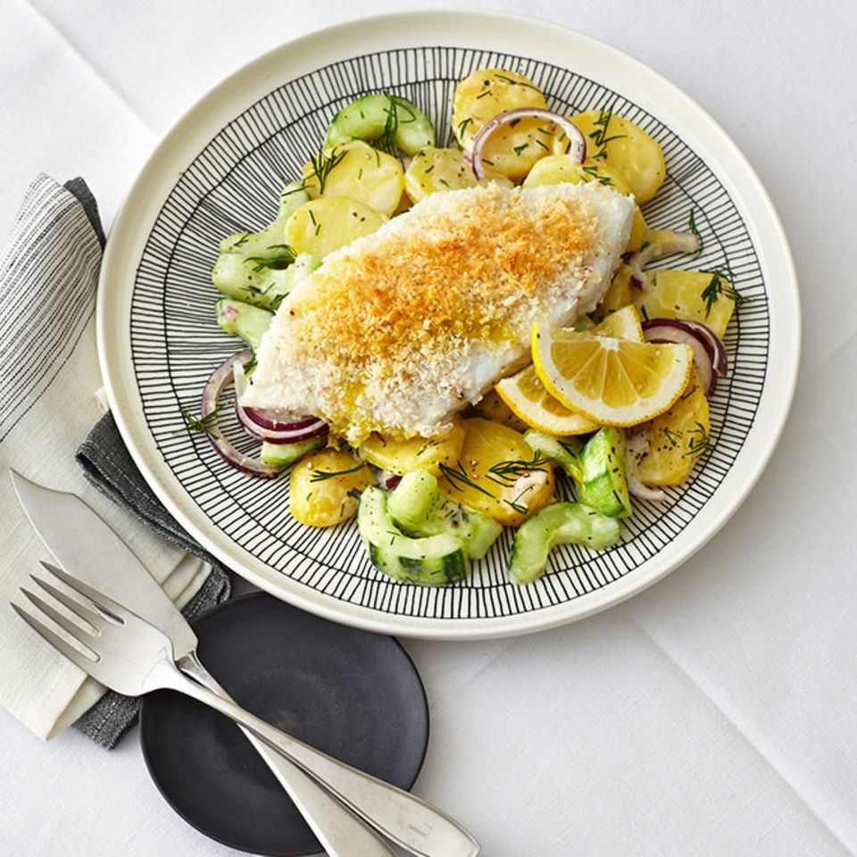

Ofenkabeljau mit Parmesan-Bröseln
Zutaten:
- g Kartoffeln (festkochend)
- Salz
- 1 Salatgurke
- 800g Kabeljaufilet (in 4 gleich große Stücke geschnitten)
- 3 El Zitronensaft
- 3 El Olivenöl
- 30 g Panko-Brösel (japanische Semmelbrösel)
- 20 g Parmesan (gerieben)
- Pfeffer
- weiße Zwiebel (rot)
- 3 Stiele Dill
- 100 ml Schlagsahne
- Bio-Zitronen
Zubereitung
- Kartoffeln schälen und in 1 cm dicke Scheiben schneiden. Knapp mit Salzwasser bedecken und 10 Minuten kochen lassen.
- Gurke schälen, längs halbieren, entkernen, in 1 cm dicke Stücke schneiden und salzen.
- Dünste die Zwiebel- und Knoblauchwürfel in Kokosöl an.
- Fisch in eine gefettete Auflaufform legen und mit Zitronensaft beträufeln.
- Olivenöl, Panko und Parmesan mischen, mit Salz und Pfeffer würzen, auf den Filets verteilen und leicht andrücken.
- Im vorgeheizten Backofen bei 220 Grad (Gas 3-4, Umluft 200 Grad) in 10 Minuten goldbraun backen.
- Zwiebel halbieren und in dünne Scheiben schneiden. Dillspitzen abzupfen und fein hacken.
- Kartoffeln abgießen, dabei 50 ml Wasser auffangen. Sahne zu den Kartoffeln gießen und aufkochen.
- Gurke in einem Sieb gut abtropfen lassen und mit den Kartoffeln mischen.
- Zwiebeln und Dill zugeben und mit Salz und Pfeffer abschmecken.
- Gegebenenfalls mit dem Kartoffelwasser verdünnen.
- Den lauwarmen Kartoffelsalat mit dem Kabeljau servieren. Nach Belieben mit Zitrone garnieren.

Ofenkabeljau mit Parmesan-Bröseln.